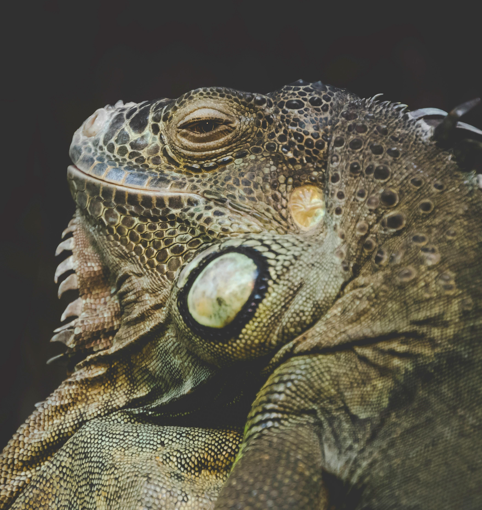
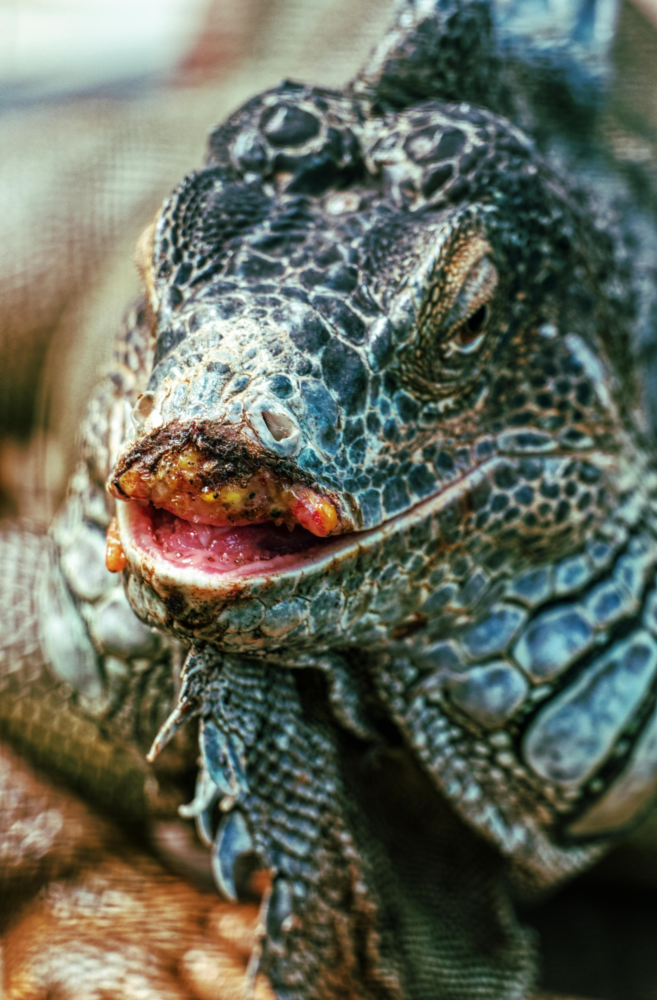
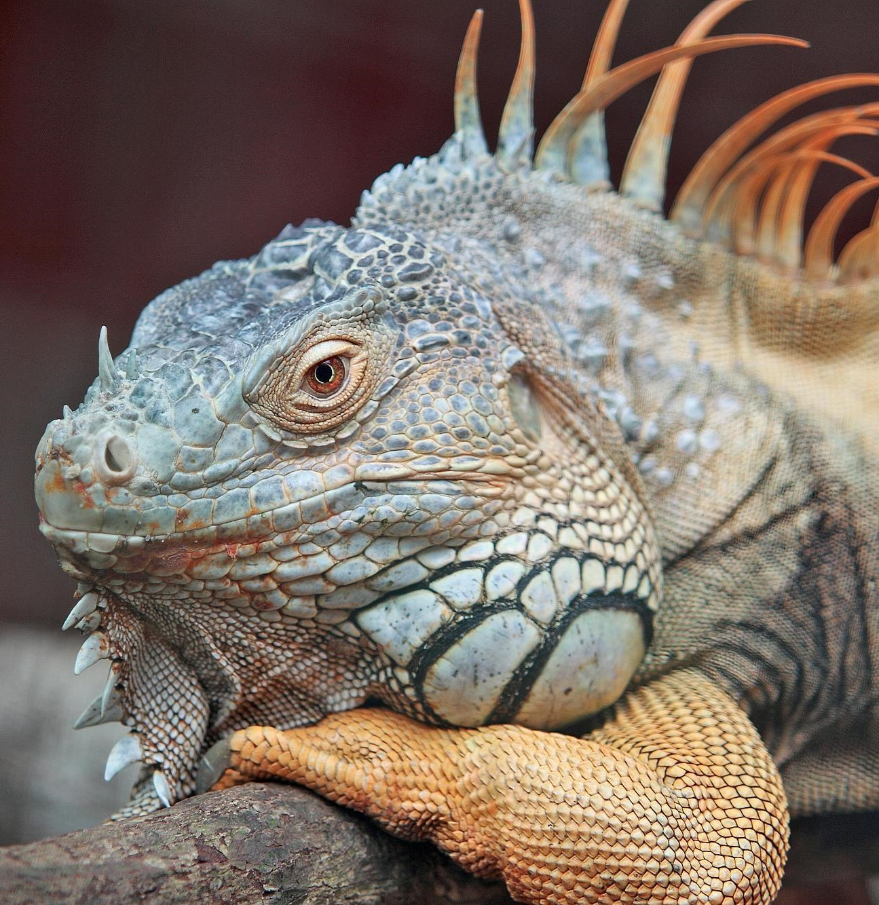

Enfermedades
Es importante estar atento a cualquier signo de enfermedad en tu iguana verde, como pérdida de apetito, cambios en el comportamiento, secreciones anormales, problemas respiratorios o cambios en la apariencia de la piel. Siempre consulta a un veterinario especializado en reptiles si sospechas que tu iguana está enferma para obtener un diagnóstico preciso y un tratamiento adecuado.
- Enfermedad metabólica ósea: Esta enfermedad ocurre cuando las iguanas no reciben suficiente calcio o vitamina D3 en su dieta. La falta de estos nutrientes puede conducir a debilidad ósea, deformidades y fracturas. Es esencial proporcionar una dieta equilibrada y adecuada en calcio y vitamina D3 para prevenir esta enfermedad. Además, asegúrate de proporcionar suficiente luz UVB, ya que es necesaria para que las iguanas sinteticen la vitamina D3.
- Infecciones respiratorias: Las infecciones respiratorias en iguanas pueden ser causadas por bacterias, virus u hongos. Estas infecciones suelen ser el resultado de condiciones ambientales inadecuadas, como temperaturas frías o niveles de humedad incorrectos en su entorno. Proporcionar una temperatura y humedad adecuadas en el hábitat de la iguana y mantener un ambiente limpio pueden ayudar a prevenir estas infecciones.
- Parásitos internos y externos: Los parásitos como ácaros, gusanos y coccidios pueden afectar la salud de las iguanas. Estos parásitos pueden causar síntomas como diarrea, pérdida de peso y letargo. Es importante realizar chequeos veterinarios regulares y análisis de heces para detectar y tratar cualquier infestación parasitaria. Además, mantener limpio el entorno de la iguana y proporcionar una dieta equilibrada también puede ayudar a prevenir infestaciones.
- Problemas de piel: Las iguanas pueden experimentar problemas de piel, que incluyen infecciones bacterianas, fúngicas o parasitarias, así como problemas de muda. Es esencial proporcionar un entorno limpio y mantener la humedad adecuada para prevenir infecciones de la piel. La dieta y la exposición adecuada a la luz UVB también pueden ayudar a mantener la salud de la piel de la iguana.
- Problemas digestivos: La impactación intestinal es una preocupación común en iguanas y puede ser causada por la ingestión de sustratos no digeribles u objetos extraños. Para prevenir la impactación intestinal, es importante proporcionar una dieta adecuada y evitar el acceso a sustratos no comestibles en el hábitat de la iguana. Además, asegúrate de que la iguana tenga acceso a suficiente agua fresca para facilitar la digestión.
- Es esencial comprender y estar atento a estas enfermedades comunes en iguanas para poder detectar cualquier problema de salud a tiempo y proporcionar el cuidado adecuado. Siempre es recomendable consultar a un veterinario especializado en reptiles si tienes alguna preocupación sobre la salud de tu iguana.